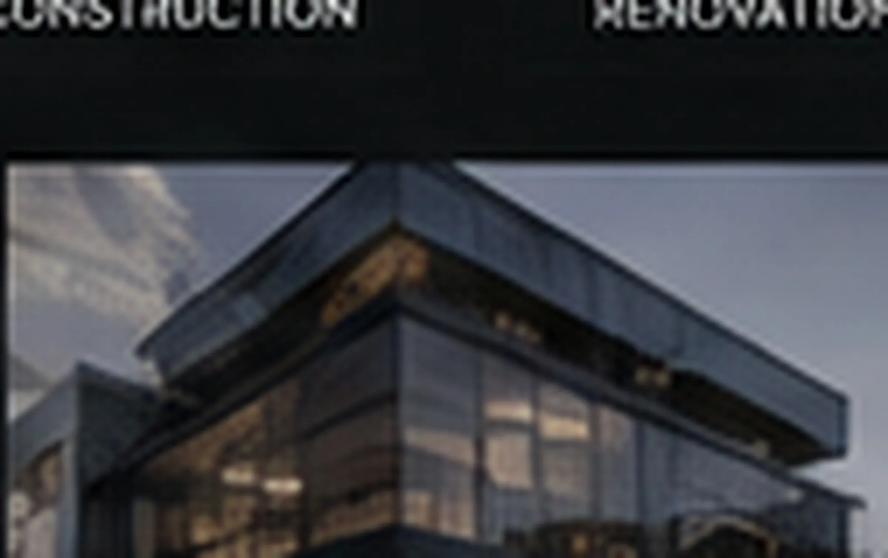

مطالعه معماری + اجرا
این صفحه بهعنوان Template کیساستادی طراحی شده است: وقتی تصاویر و اطلاعات واقعی پروژه وارد شوند، داستان پروژه، چالش، راهکار، نقشهها، دیتیلها و فرآیند اجرا در همین ساختار قرار میگیرند.
وقتی عکسها، نقشهها و اطلاعات واقعی پروژه جای نمونهها را بگیرند، هر بخش در همین قالب و بدون تغییر در چیدمان مستند میشود؛ از داستان و چالش اولیه تا راهکار طراحی، نقشهها و دیتیلهای اجرا و گزارش تحویل. این ساختار ثابت باعث میشود هر پروژه آرنو قابل مقایسه، قابل راستیآزمایی و قابل اعتماد باشد.
موقعیت، برنامه، محدودیتها و اهداف کارفرما.
تصمیمهای اصلی فرم، پلان، نور، متریال و سازه.
هماهنگی، جزئیات، خرید و نقاط کنترل اجرایی.
برای طراحی، اجرا، مدیریت پیمان، مشارکت در ساخت یا بازسازی، اطلاعات اولیه پروژه را برای تیم آرنو ارسال کنید.